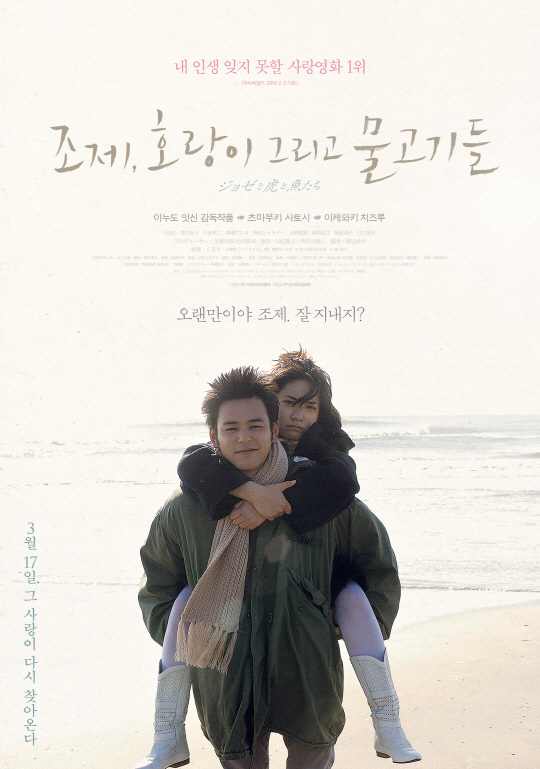
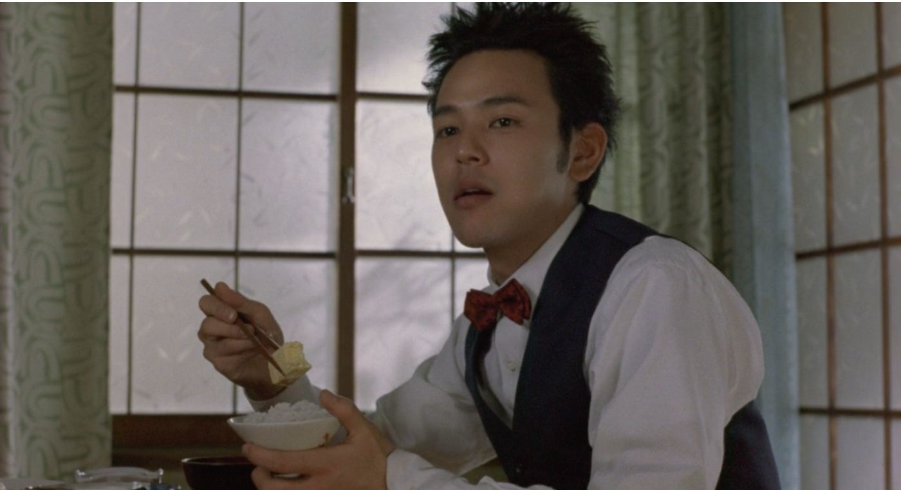

2주차 - HTML 기초
돌아오기
조제,호랑이 그리고 물고기들

감독
이누도 잇신
출연
츠마부키 사토시, 이케와키 치즈루, 아라이 히로후미
남자 주인공-츠네오(츠마부키 사토시)

여자 주인공-쿠미코(이케와키 치즈루)

개요
로맨스 · 드라마 | 영상미 · 슬픈 | 일본 | 2003년
줄거리
"이름이 뭐야?" "조제." 심야 아르바이트를 하던 대학생 츠네오는 손님들로부터 할머니가 끌고 다니는 수상한 유모차에 대해 듣게 된다.
어느 날, 소문으로만 듣던 그 유모차와 우연히 마주치게 되고 조제라는 이름의 한 여자를 알게 된다.
"좋아하는 남자가 생기면 보고 싶었어." 강렬했던 첫 만남 이후, 사랑하는 사람과 함께 호랑이, 물고기 그리고 바다를 보고 싶었다던 조제.
그런 그녀의 순수함에 끌린 츠네오의 마음에는 특별한 감정이 피어난다.
"언젠가는 나도 당신을 사랑하지 않겠지.우린 또다시 고독해지고.. 모든 게 다 그래."
서로의 마음을 확인하고 뜨거운 감정을 나누는 날들도 잠시, 츠네오와 조제는 이 사랑의 끝을 예감하게 되는데...
명대사
별로 외롭지도 않아.
처음부터 아무도 없었으니까.
그냥.. 천천히 천천히 시간이 흐를 뿐이지.
난 두번 다시 거기로 돌아가지 못할 거야.
언젠가 네가 사라지고 나면
난 길 잃은 조개 껍질처럼
혼자 깊은 해저에서 데굴데굴 굴러다니겠지.
- 쿠미코(이케와키 치즈루)
[표1] 영화 장르
| 로맨스 |
액션 |
코미디 |
공포 |
판타지 |
| 먼 훗날 우리 |
007 시리즈 |
맨인블랙 |
박쥐 |
해리포터 시리즈 |
| 늑대의 유혹 |
테이큰 |
19곰테드 |
검은사제들 |
트와일라잇 시리즈 |
| 그녀 |
킹스맨 |
과속스캔들 |
장화홍련 |
신과함께 |
| 노트북 |
분노의 질주 |
김씨표류기 |
곡성 |
찰리와 초콜릿 공장 |